📄 Save as PDF
OpenPlan Work
Complete User Manual
Version 1.0.0 | March 22, 2026
1. Getting Started
First-Time Setup
1 Open your browser and navigate to your OpenPlan Work URL2 Click "Get Started" on the welcome page3 Create your admin account:
Enter your email address
Create a password (minimum 8 characters)
IMPORTANT: Create a master password - this encrypts all your data and cannot be recovered if lost!
4 Configure your business:
Business name
Currency preference (USD, EUR, GBP, ZAR)
Tax rate
5 Setup AI features (optional):
Add Groq API key for free AI
Add OpenRouter API key for premium AI models
6 Click "Complete Setup" - you'll be redirected to your dashboard!
Important: Your master password is the key to all your data. Write it down and store it securely. Without it, your data cannot be recovered!
Daily Login
1 Enter your email and password2 Enter your master password to decrypt your data3 Click "Login"
Tip: Check "Remember me" to stay logged in longer. You can adjust session timeout in Settings.
2. Navigation Guide
Desktop Navigation
On desktop, OpenPlan Work has a sidebar on the left side of the screen:
🏠
Dashboard
Overview & stats
📁
Projects
Project management
📄
Invoices
Billing & payments
💰
Finance
Income & expenses
📦
Inventory
Stock management
📚
Knowledge
Document storage
🤖
AI Assistant
Smart helper
⚙️
Settings
Configuration
Mobile Navigation
On mobile devices, navigation is at the bottom of the screen for easy thumb access:
Bottom Navigation Bar: Quick access to main featuresMenu Button: Access all features via the hamburger menuSwipe Actions: Swipe left/right on tasks for quick actions
Header Bar
The top header contains:
Search: Quick search across tasks, notes, clientsAdd Button (+): Quickly create new itemsProfile: Account menu and logout
3. Dashboard
The Dashboard is your home base - it shows an overview of everything happening in your workspace.
Dashboard Features
📊 Statistics Cards
At the top of the dashboard, you'll see key metrics:
Total Tasks: Number of active tasksTasks Due Today: Urgent tasks needing attentionActive Projects: Current projects in progressPending Invoices: Invoices awaiting paymentMonthly Revenue: Total income this monthMonthly Expenses: Total expenses this month
📋 Tasks Due Today
A list of tasks that are due today. Click any task to view details or mark complete.
🎯 Habit Streaks
Shows your current habits and completion streaks. Click to log today's progress.
💧 Water Tracker
Quick log your water intake. Shows today's progress toward your daily goal.
📅 Upcoming
A calendar view showing upcoming due dates for tasks, invoices, and reminders.
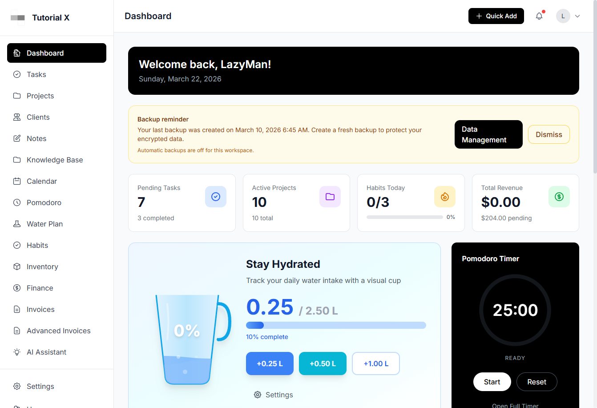
Figure 1: Dashboard Overview
Customizing Your Dashboard
Go to Settings
Click Dashboard Settings
Toggle which widgets to show
Adjust the layout order
Click Save
4. Tasks & Projects
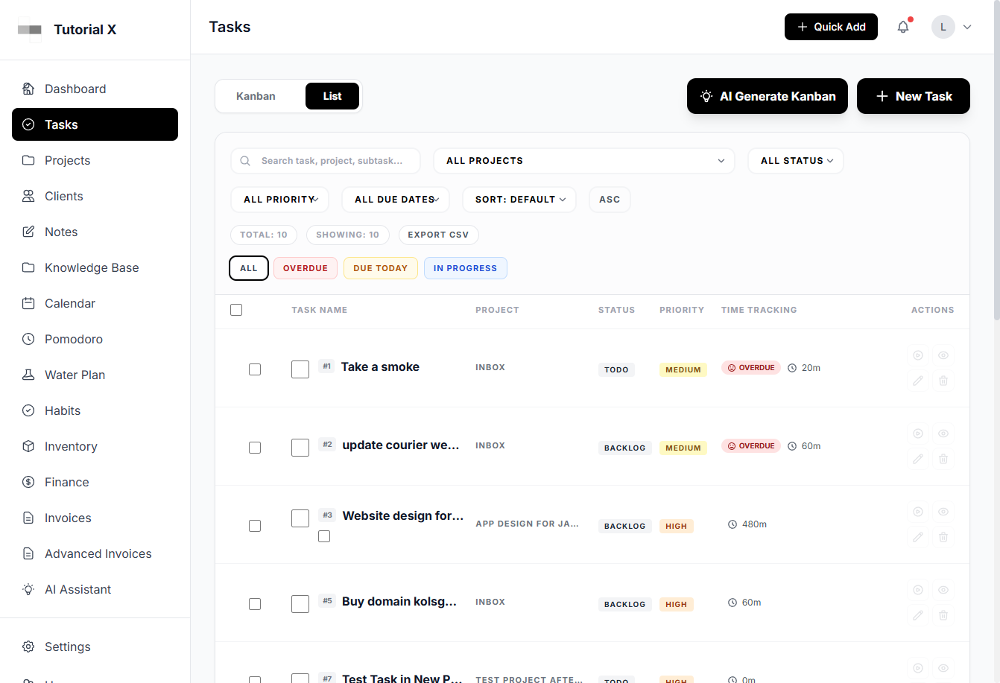
Figure 2: Tasks Management Page
Creating a Task
Method 1: Quick Add Button
Click the + button in the header
Select "Task" from the menu
Enter task title and details
Click Create
Method 2: From Tasks Page
Go to Tasks in the sidebar
Click + New Task button
Fill in the task form:
Title: What needs to be doneDescription: Additional details (optional)Project: Link to a project (optional)Status: Backlog, Todo, In Progress, Review, DonePriority: Low, Medium, High, UrgentDue Date: When is it due?Estimated Time: How long will it take? (minutes)
Click Create Task
Managing Tasks
Task Status Workflow
Tasks move through these stages:
Status
Description
Backlog Idea or future task - not actively working on Todo Ready to start - added to your todo list In Progress Currently working on this task Review Completed, needs review or approval Done Finished and approved
Task Actions
On any task, you can:
View: Click the task to see full detailsEdit: Click the edit icon to modifyComplete: Click the checkmark to mark doneDelete: Click the trash icon to removeAdd Subtask: Break down into smaller stepsTrack Time: Log time spent on task
Working with Subtasks
Open a task
Scroll to Subtasks section
Click + Add Subtask
Enter subtask title
Optionally add estimated time
Click Add
Tip: Use subtasks to break down complex tasks. Check them off as you complete each piece!
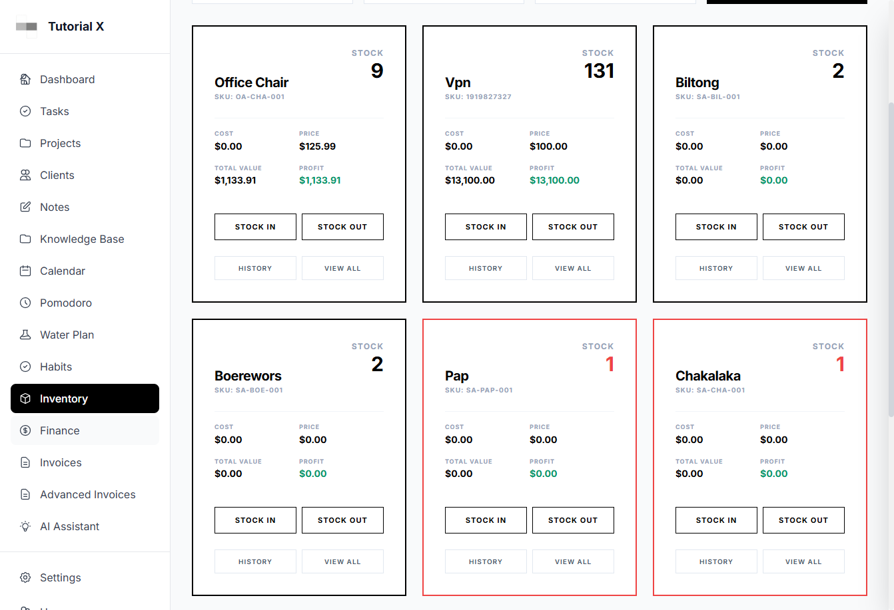
Figure 11: Inventory Management Page
Time Tracking
Open a task
Scroll to Time Entries section
Click + Add Time Entry
Enter:
Date: When did you work?Minutes: How long did you work?Description: What did you accomplish?
Click Add Entry
Creating Projects
Go to Projects in the sidebar
Click + New Project
Fill in project details:
Name: Project nameDescription: What is this project about?Client: Link to a client (optional)Status: Active, Completed, On Hold, CancelledColor: Pick a color for visual organization
Click Create Project
Project View
When you open a project, you'll see:
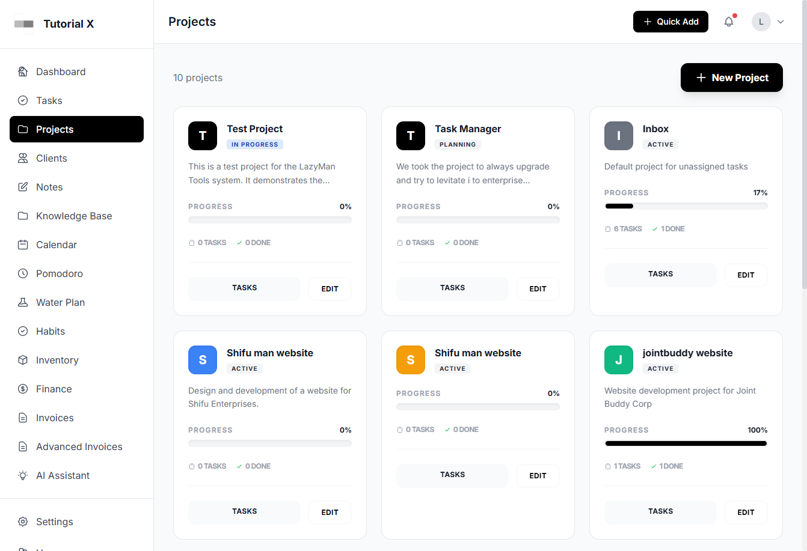
Figure 3: Projects Management Page
Project Details: Name, description, client linkProject Tasks: All tasks in this projectProject Stats: Total tasks, completed, pendingAdd Task: Quickly add tasks to this project
Kanban Board
View your tasks as a Kanban board:
Go to Tasks
Click the Board View icon (grid icon)
Drag tasks between columns to change status
Click Save to apply changes
Task Templates
Save time by creating reusable task templates:
Create a task with all the details you want to reuse
Click Save as Template
Give your template a name
Next time, click From Template when creating a task
5. Clients (CRM)
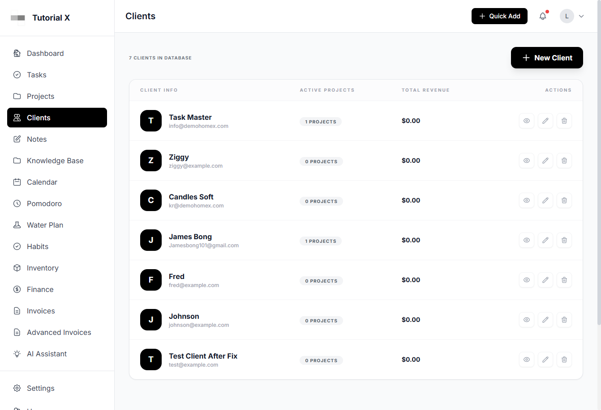
Figure 4: Clients CRM Page
Adding a Client
Go to Clients in the sidebar
Click + New Client
Fill in client information:
Name: Contact person's name (required)Email: Email addressPhone: Phone numberCompany: Company nameAddress: Street, City, State, ZIP, CountryNotes: Additional information
Click Create Client
Client View
Opening a client shows:
Contact Information: All client detailsLinked Projects: All projects for this clientLinked Invoices: All invoices sent to this clientEdit/Delete: Manage client information
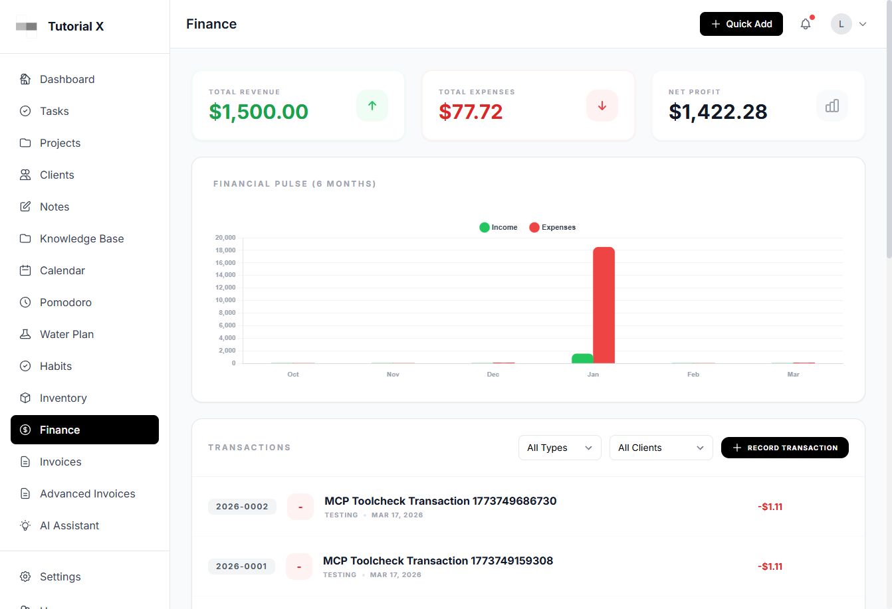
Figure 12: Finance Tracking Page
Tip: Link clients to projects and invoices for better tracking. You can see all work done for a client in one place!
Client Actions
Edit: Update client informationDelete: Remove client (warning: this affects linked projects/invoices)Create Project: Start a new project for this clientCreate Invoice: Send an invoice to this client
6. Invoices
Creating a Standard Invoice
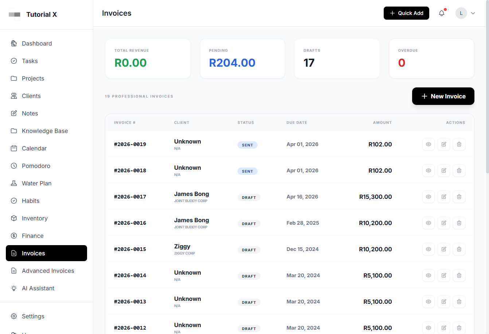
Figure 13: Invoices Page
Go to Invoices in the sidebar
Click + New Invoice
Select or create a Client
Optionally select a Project
Add line items:
Description: What are you billing for?Quantity: How many?Unit Price: Price per unitClick + Add Item for more lines
Set invoice details:
Currency: USD, EUR, GBP, or ZARDue Date: When is payment due?Notes: Additional notes (optional)
Click Create Invoice
Invoice Status
Status
Description
Draft Not yet sent to client Sent Invoice has been sent Paid Payment received Overdue Past due date, not paid Cancelled Invoice cancelled
Invoice Actions
View: See full invoice detailsPrint: Generate PDF for printing/emailingMark as Sent: Change status to "Sent"Mark as Paid: Record paymentEdit: Modify invoice (draft only)Delete: Remove invoice
Advanced Invoice Generator
For more complex invoices, use the Advanced Invoice Generator:
Go to Invoices
Click Advanced Invoices
Click + Create Advanced Invoice
Customize your invoice:
Company Header: Add logo, company detailsCustomer Details: Full customer informationLine Items: Date, reference, description, amountPayment Details: Bank info, due date, referenceCustom Fields: Add any extra fields you needFooter Text: Terms, thank you message
Click Create Invoice
Tip: Use Advanced Invoices for professional billing with custom branding, payment details, and terms.
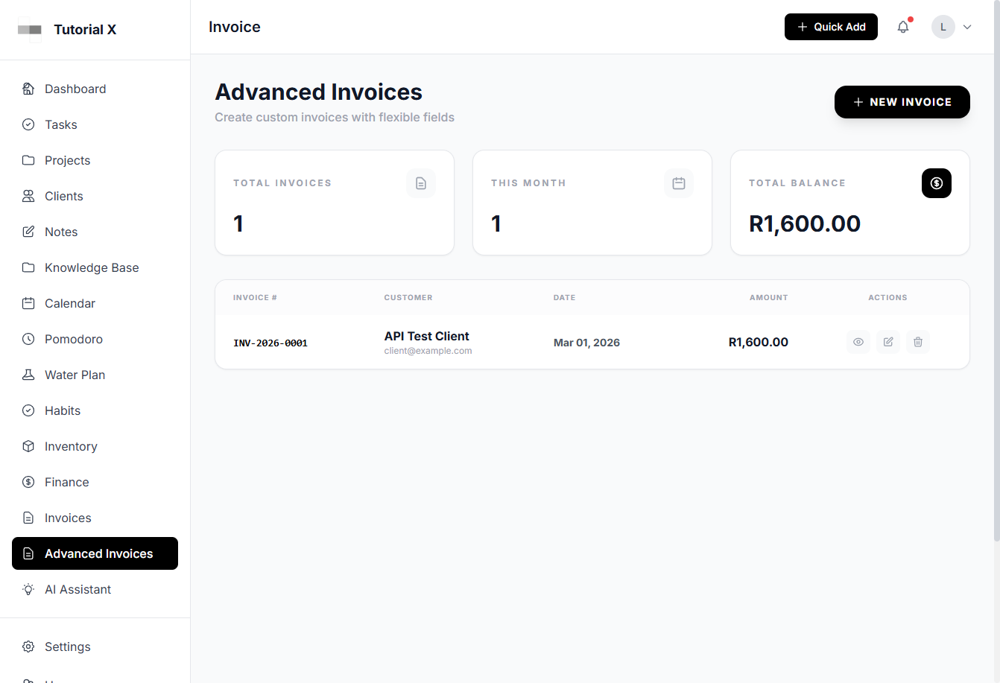
Figure 14: Advanced Invoices Generator
7. Notes
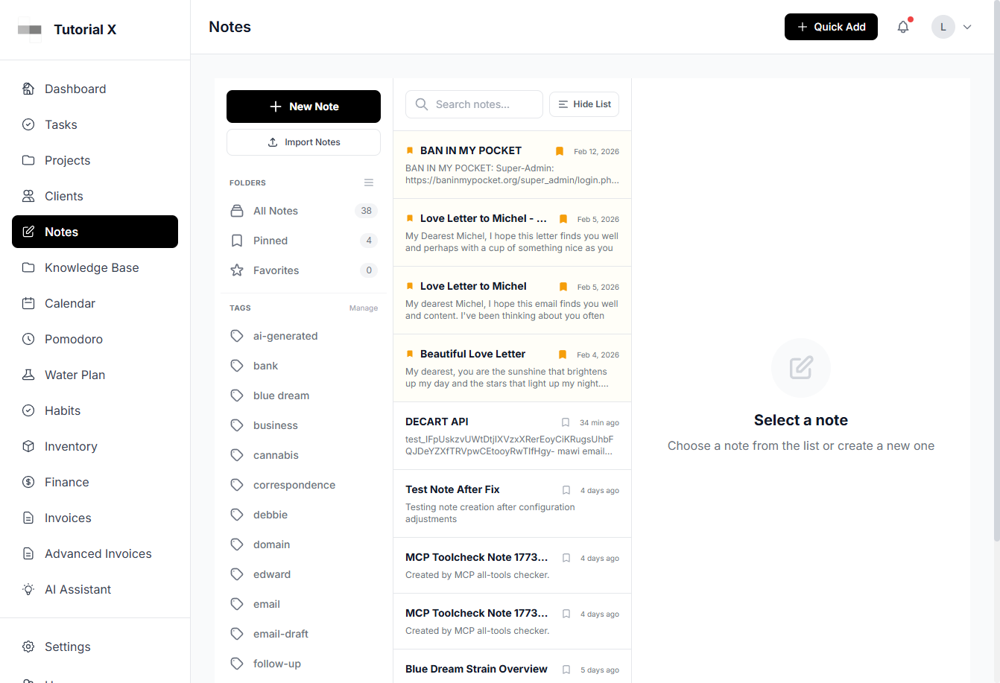
Figure 5: Notes Page
Creating a Note
Go to Notes in the sidebar
Click + New Note
Fill in note details:
Title: Note title (required)Content: Your note (up to 10,000 characters)Tags: Add tags for organization (e.g., work, ideas)Color: Pick a background color
Click Create Note
Organizing Notes
Using Tags
Tags help you organize and find notes:
Add tags when creating or editing a note
Click on a tag in the sidebar to filter notes
Use the Manage Tags button to delete unused tags
Pinning & Favorites
Pin: Keeps important notes at the topFavorite: Mark notes as favorites for quick access
AI-Powered Note Editing
Let AI help you improve your notes:
Open a note
Click the AI Edit button
Choose an action:
Rewrite: Rephrase for clarityImprove: Fix grammar and readabilityExpand: Add more detailsSummarize: Create bullet point summary
Click Apply to update your note
Notes Views
Switch between different views:
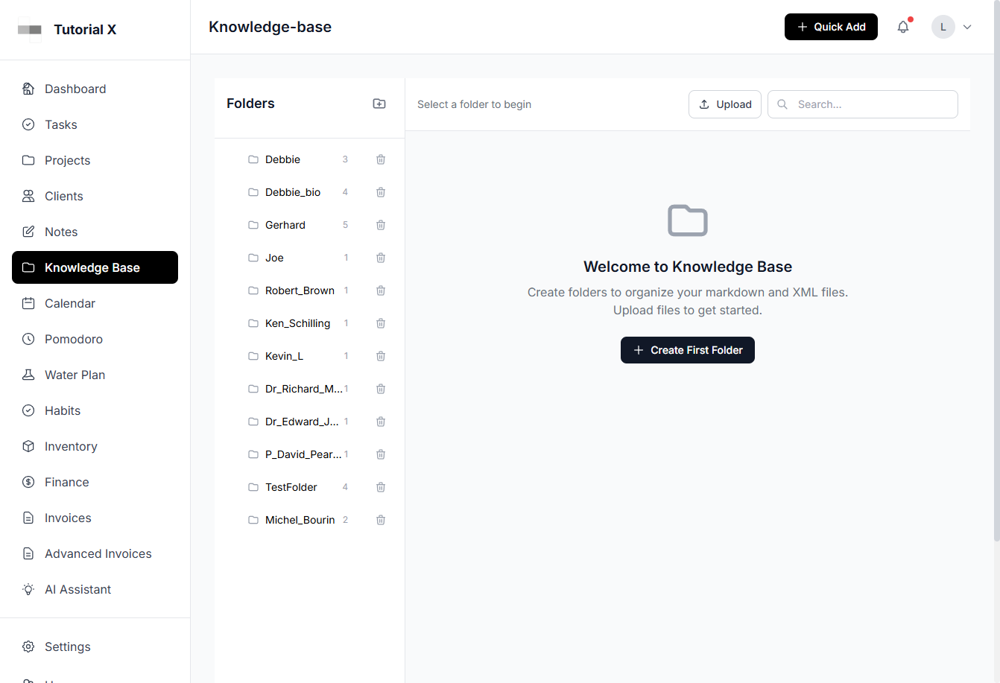
Figure 6: Knowledge Base Page
Three-Pane View: Sidebar, notes list, and note contentList View: All notes in a gridSingle Note: Focus on one note
Tip: Link notes to tasks or projects to keep related information together. Use tags to create topic-based collections.
8. Habits & Productivity
Habit Tracker
Creating a Habit
Go to Habits in the sidebar
Click + New Habit
Fill in habit details:
Name: What habit do you want to track?Category: Health, work, personal, etc.Frequency: Daily, weekly, or monthlyReminder Time: When should you be reminded?Target Duration: How long should it take? (minutes)
Click Create Habit
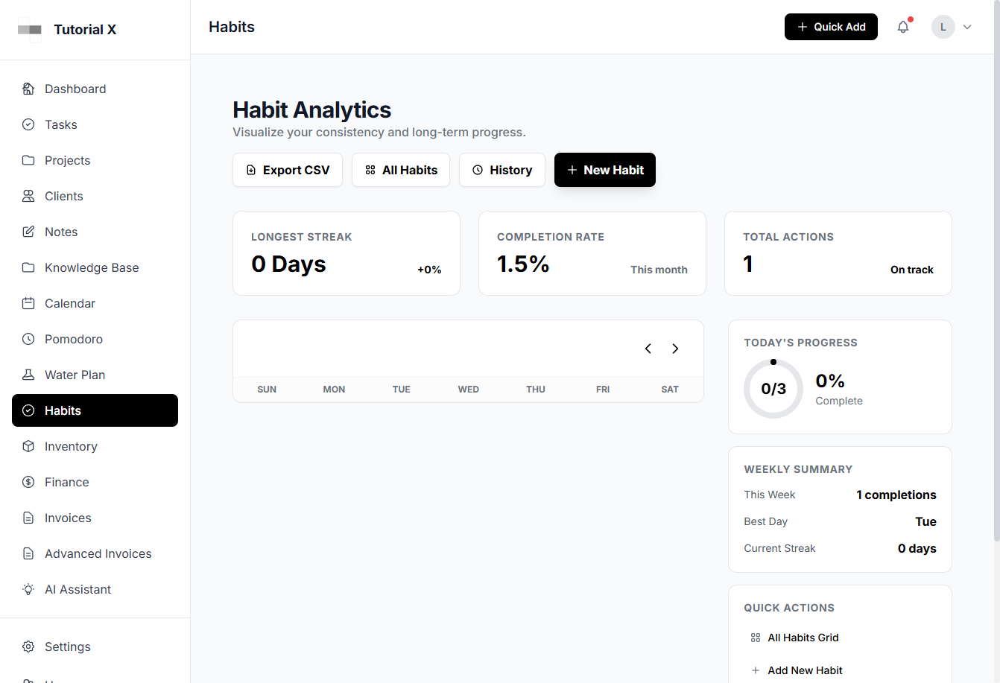
Figure 10: Habits Tracker Page
Tracking Habits
Each habit shows a checkbox for today
Click the checkbox to mark complete
View your streak (consecutive days completed)
Click a habit to see history and statistics
Habit Timer
Some habits have a target duration. You can time yourself:
Open a habit
Click Start Timer
Work on your habit
Click Stop Timer when done
The time is automatically logged
Pomodoro Timer
The Pomodoro Technique helps you focus with timed work sessions:
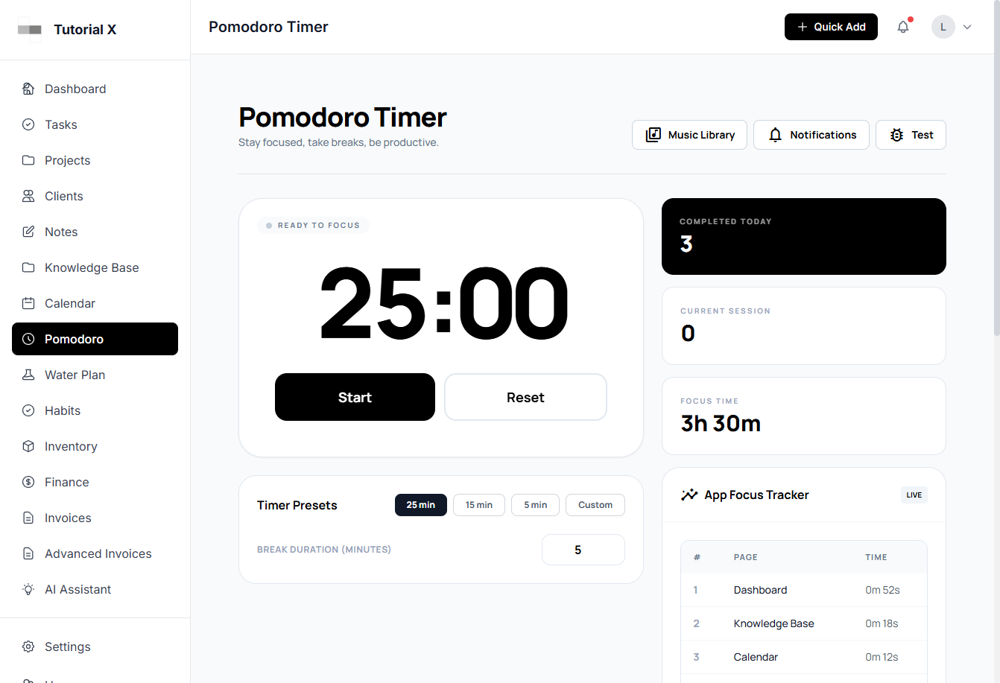
Figure 8: Pomodoro Focus Timer
Go to Pomodoro in the sidebar
Optionally select a task to work on
Click Start Focus Session (25 minutes)
Work until the timer ends
Take a Short Break (5 minutes)
After 4 sessions, take a Long Break (15 minutes)
Water Tracker
Setting Up Water Tracking
Go to Water Tracker
Set your daily goal (number of glasses)
Configure your glass size (default: 250ml)
Click Generate AI Plan for personalized schedule
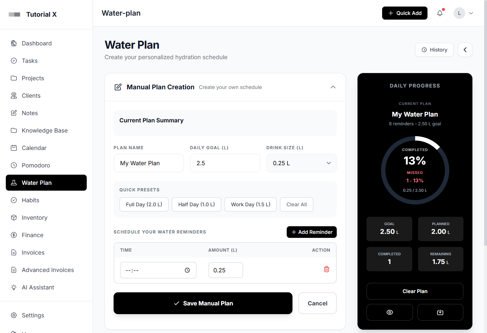
Figure 9: Water Tracker Page
Logging Water Intake
Click the + button to add a glass of water
Watch the progress bar fill up
View your intake history
Get reminders to drink water throughout the day
AI Hydration Plan
Let AI create a personalized hydration plan based on:
Your weight
Activity level (sedentary, moderate, active, athlete)
Climate (temperate, hot, humid, cold)
Your wake/sleep schedule
Calendar View
See all your tasks, habits, and reminders in one place:
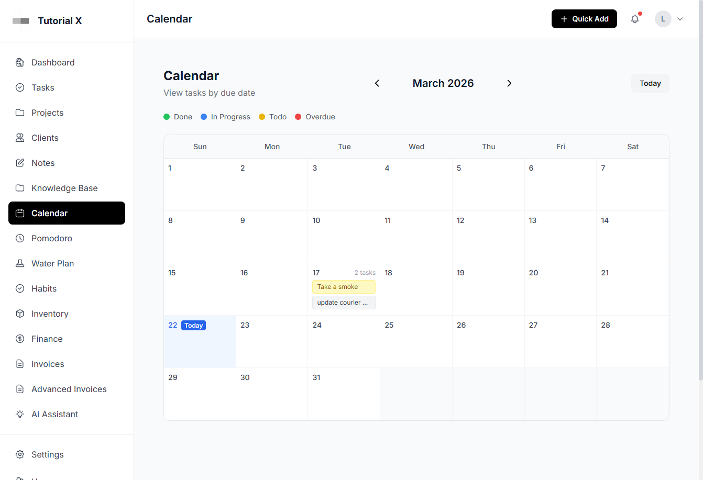
Figure 7: Calendar View
Go to Calendar
View by month
Click on any date to see what's due
Tasks show their due dates
Habits show reminder times
Invoices show due dates
9. AI Assistant
What is the AI Assistant?
The AI Assistant is like having a virtual assistant that can help you manage your tasks, projects, and more using natural language. It can understand what you want and take action for you!
Setting Up AI
Go to Settings → AI API Keys
Add an API key:
Groq: Free, fast AI (recommended for starters)OpenRouter: Access to premium models (Claude, GPT-4, etc.)
Save your API key
Note: You need an API key to use AI features. Groq offers a free tier with generous limits.
Using the AI Assistant
Go to AI Assistant in the sidebar
Type your request in natural language, such as:
"Create a task to call John tomorrow at 2pm"
"Add a new project for website redesign"
"Show me all my high priority tasks"
"Create an invoice for client ABC for $500"
"I need to track my daily meditation habit"
Click Send or press Enter
The AI will understand your request and take action
Review what the AI did and confirm or adjust as needed
What the AI Can Do
✅
Tasks
Create, update, complete
📁
Projects
Create and manage
📄
Invoices
Generate invoices
💰
Finance
Log transactions
Example Conversations
Create a Client and Project
You: "Add a client called Acme Corp with email contact@acme.com, then create a website redesign project for them"
AI: Creates the client, creates the project linked to that client
Generate Multiple Tasks
You: "Create 5 tasks for the website project: design mockups, develop homepage, develop about page, testing, and deployment"
AI: Creates all 5 tasks in the project
Create an Invoice
You: "Send an invoice to Acme Corp for 10 hours of web development at $50 per hour"
AI: Creates an invoice with line item: 10 hours × $50 = $500
AI Memory
The AI Assistant remembers your conversation within the session. You can reference things you mentioned earlier:
"What was that client's name again?"
"Add another task to the project I just created"
"Show me the tasks for this week"
Tip: Be specific in your requests. The more details you provide, the better the AI can help!
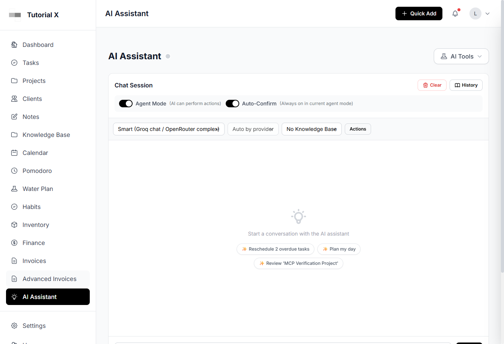
Figure 15: AI Assistant Interface
10. Settings
Business Settings
Configure your business information:
Business Name Email - Displayed on invoicesPhone Address Default Currency - USD, EUR, GBP, ZARTax Rate - Applied to invoices
AI Configuration
AI API Keys
Add your AI provider API keys:
Model Settings
Choose which AI models to use:
Chat Model: For AI Assistant conversationsTasks Model: For generating tasks from descriptionsNotes Model: For AI note editing
Note: Groq models are free and fast. OpenRouter gives you access to premium models like Claude and GPT-4.
Session Settings
Choose how long you stay logged in:
20 minutes - High security (auto-logout after 20min of inactivity)1 hour - Default (recommended)Indefinite - Stay logged in until you logout
Backup Settings
Configure automatic backups:
Enable Auto-Backup: Turn on automatic backupsBackup Frequency: Daily, weekly, monthlyRetention: How many backups to keep
Data Management
Export Data
Go to Settings → Data Management
Choose export format:
JSON: Machine-readable formatZIP: Complete backup with all files
Click Export
Save the file to your computer
Import Data
Go to Settings → Import Data
Choose a file (JSON or ZIP from export)
Click Import
Warning: This will merge with existing data
Important: Always export a backup before importing data. Imports cannot be undone!
MCP Configuration
For developers using Claude Code or other AI coding agents:
Go to Settings → Developer Tools
Click Generate Token (or copy existing)
Copy the configuration JSON
Paste into your Claude Code settings file
Custom Instructions
Tell the AI Assistant how to help you:
Go to Settings → Custom Instructions
Write instructions like:
"Always ask me before creating invoices"
"Set task priority to high by default"
"Remind me about deadlines 2 days before"
Click Save
Account Settings
Change Password - Update your login passwordUpdate Profile - Change your name or email
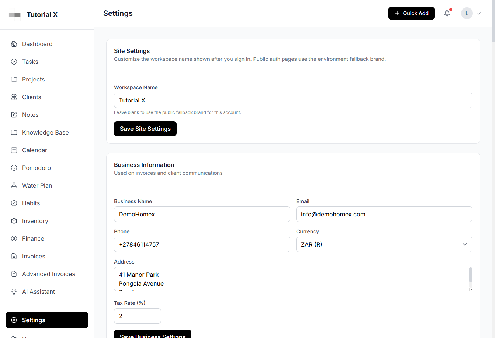
Figure 16: Settings Page
OpenPlan Work User Manual
Version 1.0.0 | March 22, 2026
https://github.com/naijagamerx/openplan.work